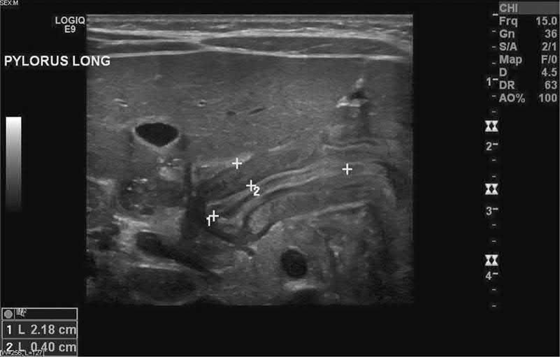
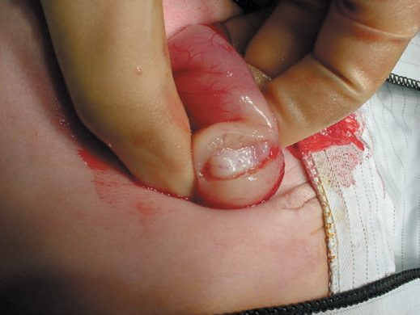
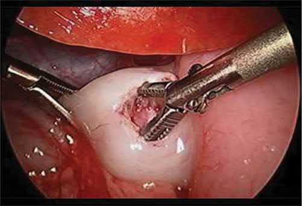

Pyloric Stenosis
Summary
Infantile hypertrophic pyloric stenosis (HPS) is a disease of early infancy caused by hypertrophy of the circular muscle of the pylorus, producing progressive gastric outlet obstruction with non-bilious, projectile vomiting typically presenting between 2 and 8 weeks of age [1][2]. It is diagnosed clinically (palpable "olive") or by ultrasound, and treated by pyloromyotomy after correction of the characteristic hypochloraemic, hypokalaemic metabolic alkalosis [3][4].
Definition
Congenital/infantile hypertrophic pyloric stenosis is hypertrophy of the pyloric smooth muscle causing gastric outlet obstruction in early infancy, occurring at about 3–6 weeks of life [3]. Hypertrophy of the circular muscle of the pylorus results in constriction and obstruction of the gastric outlet [1].
Pathophysiology
- Hypertrophy of the circular muscle of the pylorus narrows and elongates the pyloric channel, producing mechanical gastric outlet obstruction [1].
- The exact cause of HPS remains unknown, but a lack of nitric oxide synthase in pyloric tissue has been implicated [1].
- What was once thought to be an inherently congenital problem is now understood to be an acquired condition, with causes likely multifactorial, including both genetic and environmental factors [5].
- Persistent vomiting causes loss of hydrochloric acid and gastric contents, leading to hypokalemic, hypochloremic metabolic alkalosis and dehydration; the body attempts to compensate by converting carbon dioxide and water to hydrogen and bicarbonate ions, further depleting bicarbonate buffering capacity and dropping carbon dioxide levels [1].
- Paradoxical aciduria occurs as the kidney preferentially retains hydrogen ions over potassium once potassium stores are depleted [4].
Clinical features
- Presentation is with non-bilious, projectile vomiting starting between 2 and 6 weeks of age (up to 3–12 weeks), typically in firstborn males [2][4].
- The infant remains hungry and feeds eagerly after vomiting (postprandial hunger), which helps distinguish HPS from infective causes of vomiting such as meningitis or urinary tract infection, and from gastro-oesophageal reflux, which waxes and wanes from birth rather than progressively worsening [2].
- Vomiting frequency and forcefulness increase daily [2].
- Small, green starvation stools may be passed infrequently, with poor weight gain or weight loss [3].
- Physical examination may reveal a sunken fontanelle, lethargy, visible left-to-right gastric peristalsis, and, in an experienced examiner's hands, a palpable "olive" mass in the epigastrium/right upper quadrant, best felt with the baby relaxed during a test feed [2][3][5].
- If presentation is early, clinical findings may be unremarkable; if late, weight loss and dehydration requiring resuscitation predominate [2].
- Dehydration, pallor, and being underweight are seen only in advanced disease [3].
Etiology
- HPS occurs more frequently in male infants, roughly four times more often than females, with first-born male infants at highest risk [1][2].
- There is often a maternal family history, and an infant whose mother had pyloric stenosis has a fourfold increased incidence of HPS [2][5].
- The precise etiology is unclear and is now considered likely multifactorial, involving genetic and environmental causes rather than a purely congenital defect [5].
Diagnosis
- If a pyloric "tumour"/olive is palpated on examination, surgery may proceed without further imaging [1][3].
- Ultrasound is the primary diagnostic tool, showing a thickened and elongated pylorus; diagnostic thresholds cited include pyloric muscle thickness ≥3–4 mm and channel length ≥14–18 mm (institution-dependent), with increased muscle-to-lumen ratio and reduced fluid transit [1][3][4][5].
- A test feed can demonstrate left-to-right gastric peristalsis and allow palpation of the olive in a relaxed baby [2].
- A barium meal or upper GI contrast study (rarely necessary) can show an enlarged stomach, increased gastric peristalsis, and an elongated, narrowed pyloric canal, and can exclude other causes of emesis, but should be used cautiously because of aspiration risk [1][3].
- Plain abdominal radiograph can show an enlarged gastric gas bubble [1].
- Laboratory studies show hypochloraemic, hypokalaemic metabolic alkalosis with paradoxical aciduria; electrolytes and capillary blood gases are checked (decreased Na+, K+, Cl-, and base excess/pH changes) [3][4].

Treatment and Management
- Pyloric stenosis is never a surgical emergency; infants must be adequately resuscitated and electrolyte/acid-base abnormalities corrected before proceeding to the operating room [5][6].
- For severely dehydrated infants, resuscitation begins with normal saline boluses (e.g., 20 mL/kg) until adequate urine output is achieved, then maintenance fluid is switched to dextrose-containing saline with added potassium (e.g., D5 with 0.45% NaCl and 10–20 mEq/L KCl, or 0.9% saline with 0.15% KCl in 5% glucose at 6–7.5 mL/kg/h) [1][2][4].
- Potassium-containing resuscitation fluids (e.g., lactated Ringer's) should be avoided in initial boluses for severely dehydrated infants because of hyperkalemia risk, and non-salt-containing solutions should be avoided because of hyponatremia risk; maintenance fluids should always contain glucose given infants' limited gluconeogenic reserve [4].
- Correction of the alkalosis may take 24–48 hours and is monitored with serial (e.g., 6-hourly) capillary blood gases; anesthetic risk is heightened when bicarbonate is ≥30 mEq/L because of compensatory hypoventilation risking postoperative apnea, so serum bicarbonate and chloride should be normalized (bicarbonate <30 mEq/L, chloride >95 mEq/L) before surgery [1][3][5].
- A nasogastric tube (8–10 Fr) is used to empty the stomach and prevent aspiration of vomited secretions [2][3].
- Adequate urine output (>2 mL/kg/hour) is used as a marker that resuscitation is complete [5][6].
- Postoperatively, feeds are reintroduced (ad lib or via a fast feeding protocol) usually within the first 6–24 hours [2][3][5].
There is no NICE guideline on pyloric stenosis, but the operation is never the emergency and the fluid management is, so the UK document that governs this topic is NG29 on intravenous fluid therapy in children and young people in hospital. Its numbers are the ones to know before taking an infant with hypochloraemic hypokalaemic metabolic alkalosis to theatre.
- Resuscitation is a defined bolus, and the neonatal figure differs from the older child's.
- For children and young people, use glucose-free crystalloids containing sodium 131 to 154 mmol/litre, as a bolus of 10 ml/kg over less than 10 minutes, taking pre-existing cardiac or kidney disease into account as smaller volumes may be needed [7].
- For term neonates the bolus is 10 to 20 ml/kg over less than 10 minutes [7]. Do not use tetrastarch [7].
- Reassess after each bolus and decide whether more is needed, and seek expert advice, for example from the paediatric intensive care team, if 40 to 60 ml/kg or more is needed as part of initial resuscitation [7].
Maintenance is calculated by the Holliday-Segar formula, with a separate schedule for term neonates by day of life. Use 100 ml/kg/day for the first 10 kg, 50 ml/kg/day for the next 10 kg, and 20 ml/kg/day for weight over 20 kg, being aware that over 24 hours males rarely need more than 2,500 ml and females more than 2,000 ml [7]. For term neonates [7]:
| Age | Routine maintenance |
|---|---|
| Birth to day 1 | 50 to 60 ml/kg/day |
| Day 2 | 70 to 80 ml/kg/day |
| Day 3 | 80 to 100 ml/kg/day |
| Day 4 | 100 to 120 ml/kg/day |
| Days 5 to 28 | 120 to 150 ml/kg/day |
Table reformats the NG29 neonatal maintenance schedule [7].
- The fluid itself is isotonic, and this is the point on which UK practice changed.
- For routine maintenance, initially use isotonic crystalloids containing sodium in the range 131 to 154 mmol/litre [7].
- For term neonates aged 8 days or over, use isotonic crystalloid with 5 to 10% glucose; for term neonates up to 7 days, use professional judgement, because a sodium content of 131 to 154 mmol/litre may be too high, or sodium may not be needed at all, and a glucose content of 5 to 10% may be too low [7].
- For a term neonate in the critical postnatal adaptation phase, give no or minimal sodium until postnatal diuresis with weight loss occurs [7].
- Monitoring and the replacement of ongoing losses are separate prescriptions from maintenance. Measure plasma electrolyte concentrations and blood glucose when starting maintenance fluids and at least every 24 hours thereafter, and base every subsequent prescription on those results [7].
- Replacement is adjusted in addition to maintenance needs to account for existing deficits or excesses, ongoing losses, or abnormal distribution such as tissue oedema in sepsis, and 0.9% sodium chloride containing potassium is used to replace ongoing losses [7].
- For an infant with protracted vomiting, that last recommendation is the operative one: the chloride and potassium deficit is replaced, not merely the volume.
Surgeries
- Definitive treatment is pyloromyotomy (the Ramstedt, or Ramstedt-Fredet, procedure), performed laparoscopically or open through a supraumbilical, periumbilical, right upper quadrant, or circumbilical incision [1][2][3].
- A serosal incision is made over the pylorus and the hypertrophied muscle is spread (with a blunt spreader/graspers or via blade/Bovie cautery), leaving the submucosa intact from the duodenal fornix to the gastric antrum, with the incision extending onto the stomach to avoid early recurrence [2][5].
- The fundamental surgical principle is adequate cutting of the hypertrophied pyloric muscle to achieve mucosal bulging and independent muscle wall motion without mucosal injury; the risk of perforation is highest at the duodenal end of the myotomy [1][5].
- Surgeons should avoid opening the mucosa and avoid injuring the prepyloric vein (of Mayo) [3].
- Some surgeons test the completed myotomy by insufflating the stomach with air while clamping the duodenum distally to check for a mucosal leak [5].
- If a perforation is identified intraoperatively, it is closed by approximating the mucosa to the seromuscular edge, and the patient is left with a nasogastric tube with a postoperative UGI study performed before feeding advancement [5].
- Laparoscopic pyloromyotomy is used more routinely and is associated with a shorter length of stay and a lower incidence of surgical site infection compared with an open approach [1].


Complications
- Full-thickness mucosal perforation occurs more commonly with the laparoscopic approach, but its incidence is still rare (<1%) [1].
- A short myotomy incision can cause early recurrence of obstruction [2].
- Postoperative emesis is common and usually self-limited due to pyloric edema after manipulation; if persistent beyond 7–14 postoperative days, an upper GI contrast study is warranted to evaluate for incomplete pyloromyotomy, though gastro-oesophageal reflux is a more likely cause of persistent early postoperative vomiting than an incomplete myotomy [1][2].
- Ongoing feeding intolerance after operation is associated with an inadequate proximal (duodenal-end) pyloromyotomy [5].
Prognosis
Patients often do well postoperatively and are typically fed ad lib or on a fast feeding protocol to reach goal feeds and allow discharge home [5]. Watchful waiting is generally the appropriate course of action for postoperative feeding intolerance in the absence of a demonstrated perforation, since postoperative imaging can show persistent radiographic pyloric stenosis even after an adequate pyloromyotomy [5].
References
- Sabiston Textbook of Surgery, 22nd ed., Ch. 117 Pediatric Surgery, thickness >3–4 mm, length >15–18 mm
- Bailey & Love's Short Practice of Surgery, 28th ed., Ch. 17 Paediatric surgery, M:F ratio 4:1
- Oxford Handbook of Clinical Surgery, 5th ed., Ch. 13 Paediatric surgery, thickness >4 mm, length >16 mm
- The ABSITE Review, 2022, Ch. 43 Pediatric Surgery
- Maingot's Abdominal Operations, 13th ed., Ch. 9 Pediatric GI Surgery, thickness >3 mm, length >14 mm in infants under 30 days
- Schwartz's Principles of Surgery: ABSITE and Board Review, Ch. 39 Pediatric Surgery
- NICE Guideline NG29: Intravenous fluid therapy in children and young people in hospital. National Institute for Health and Care Excellence, London, UK, 2015, updated 2020., 1.3.1; 1.3.2; 1.3.3; 1.3.5; 1.3.6; 1.4.1; 1.4.2; 1.4.3; 1.4.4; 1.4.6; 1.4.7; 1.4.8; 1.5.1; 1.5.3 www.nice.org.uk